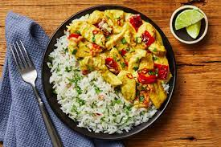

Coconut Curry Chicken

Description
A flavorful homemade curry for dinner can be just as easy as a grilled cheese or quick stir-fry, and this recipe is perfect proof. Chicken breast strips are seared until browned, then coated in tomato paste, chili flakes, and aromatic spices. It’s all simmered in creamy, nutty, mildly sweet coconut milk, then finished with bite-sized pieces of sautéed kale. Spoon it all over steamy basmati rice for soaking up every last drop of curry.
Allergens: Tree Nuts, Milk
Ingredients
- 1 Cup - Basmati Rice
- 2 - Red, Yellow, or Orange Bell Pepper
- 20 oz - Chicken Breast Strips
- 3 oz - Tomato Paste
- 2 TBSP - Curry Powder
- 2 tsp - Paprika
- 1 tsp - Chili Flakes (optional)
- 10.14 oz - Coconut Milk
- 4 TBSP - Sour Cream
- 2 tsp - Vegetable Oil
- 2 tsp - Sugar
- 2 TBSP - Butter
- Kosher Salt
- Black Pepper
Steps
- In a small pot, combine rice, 1-1/2 cup water, and a pinch of salt. Bring to a boil, then cover and reduce to a low simmer. Cook until rice is tender, 15-18 minutes. Keep covered off heat until ready to serve.
- While rice cooks, wash and dry produce.
- Core, deseed, and dice bell pepper into 1-inch pieces
- Heat a drizzle of oil in a large pan over medium-high heat. Add bell pepper and season with salt and pepper. Cook, stirring occasionally, until tender, 5-7 minutes.
- Turn off heat; transfer to plate. Wash out pan.
- While bell pepper cooks, pat chicken dry with paper towels and season all over with salt and pepper.
- Once bell pepper is done, heat another drizzle of oil in same pan over medium-high heat. Add chicken; cook, stirring occasionally, until browned and cooked through, 4-6 minutes. Reduce heat to medium.
- Add tomato paste, curry powder, and paprika to pan with chicken. Add a pinch of chili flakes if you like things spicy.
- Cook, stirring, until chicken is fully coated and spices are fragrant, 1 minute.
- Stir in coconut milk, 1/3 cup water, 2 tsp. sugar, 2 TBSP butter, and a big pinch of salt. Bring to a simmer, then reduce heat to low. Cook until thickened, 2-3 minutes more.
- Add bell pepper and sour cream; stir to combine. Taste a nd season with salt and pepper. Turn off heat.
- Fluff rice with a fork and season with salt and pepper; divide between bowls.
- Top rice with coconut curry chicken and sprinkle with a pinch of chili flakes if desired. Serve.